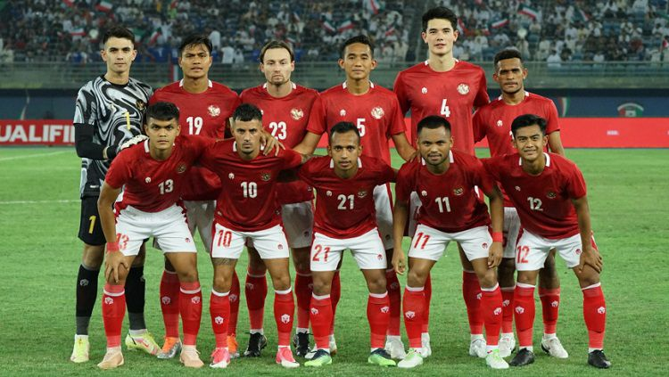

Indonesia vs Curacao : Uji Coba Melawan Tim yang Peringkat FIFA Jauh Lebih Tinggi
Penulis : Ariq Yosyam | Tanggal : 13 September 2022

Melansir dari laman resmi PSSI, disebutkan bahwa skuat Garuda akan dijadwalkan menghadapi Curacao sebanyak dua kali dalam agenda FIFA Matchday di bulan September mendatang.
Duel pertama Timnas Indonesia kontra Curacao terjadi pada 24 September di Stadion Gelora Bandung Lautan Api, sementara kedua terjadi pada 27 September di Pakansari.
Diatas kertas, Curacao sendiri merupakan lawan yang cukup berat buat Timnas Indonesia lantaran perbedaan ranking FIFA yang jauh.
Per 2022 ini, Curacao yang merupakan wakil wilayah CONCACAF berada di urutan 84 FIFA. Sementara Timnas Indonesia dari ASIA hanya bertengger di peringkat 155.
Tag : Sepakbola